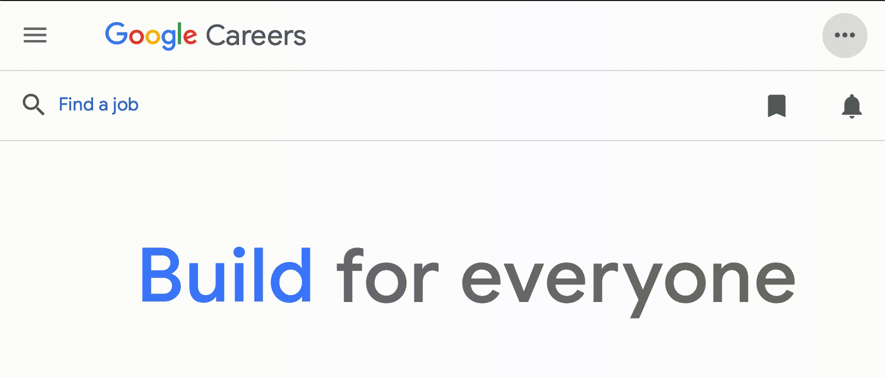

I was 16 when I got my first coding job.
My resume was absolutely horrendous.
The only work experience I had was a job as a clerk at a grocery store. It took
months for me to even come close to an interview.
It's hard. I know. But if it was easy, everyone would do it!
I want to make sure that you don't make the same mistakes that I did. This is exactly
what I wish somebody had told me before I started looking for my first programming job.
Hopefully this saves you time and helps land you a job!
Your Resume
This is the #1 most important thing. You need a good resume. Let me answer
some of the most common questions.
How many pages should I have?
Single page. No questions asked. There are not many people on this Earth who are
qualified enough to have a two page resume.
The reality is that recruiters will only spend a few seconds on your resume. They
need to go through hundreds, if not thousands, per day. The easier you make it for them, the better your
chances are.
One column or two?
It depends on your preference! I like to keep a single column format.
I find it much easier to read at first sight since my eyes can follow a straight path down the page.
Two columns can work well too, just be careful to keep things clean. I'd stray away from three columns.
Coloured or black and white?
This is also subjective. In my personal opinion, I think adding a subtle amount of 🌈 colour can do
wonders with helping you stand out. It definitely gives the resume a more modern feel.
It can be very easy to overdo this. Try to keep the colour to a minimum. Definitely keep
your main text black, but don't be afraid to add some colour into the header or subtitles.
I'm always happy to review resumes. Just
get in touch!
How to Apply
The company website is almost always the best way to apply.
But, there are some exceptions.
If you're a University/College student, check if your school has a job board or co-op
program.
This can be a great way for you to get exposure through your school.
If you're a high school student like I was, directly emailing recruiters was
the route I went. When you're in high school, you need people to pay
extra attention to what you have to say since you have no education to
back yourself up.
In all other cases, I would just apply through the company website.
It usually doesn't hurt to apply in multiple places as well, so don't fret
too much!

Cover Letters
Cover letters are a huge waste of your time, in 99.9% of cases.
It's just not worth it.
If your resume isn't good enough, a cover letter likely won't get you an interview.
If your resume is good enough, then why write a cover letter?
Often, recruiters don't even read cover letters. It's just not worth their time.
Especially if it looks like this.
To Whom it May Concern,
I'm writing to inform you that I'm applying to the position of {POSITION} at {COMPANY}...
I'm writing to inform you that I'm applying to the position of {POSITION} at {COMPANY}...
Please don't do this! I used to. Literally. This is taken from one
of my first job applications in 2015. Don't be me.
If you're going to write a cover letter, just write from the heart ❤.
It's so refreshing to read something that sounds genuine instead of terminator-esque. 🤖
So... what are the 0.01% of cases where it might be worth it?
Well, if you're applying to a smaller company which you genuinely like and
dream about working at,
it may be worth expressing that passion in a letter. But again, I try to stay far away from
cover letters (and job postings which require them).
Side Projects
Side projects are the best way to get noticed when you have no experience.
They show that you have passion, interest, and skills.
On top of that, you get to make something!
The first side project that I recommend to absolutely everyone is to make a personal
website. It can be a portfolio, a blog, an online resume, or all of the above. Why?
- It's very beginner friendly - you can get up and running in a weekend. You can also host it for free using something like Github Pages.
- You learn highly applicable web development skills. I think every programmer (and non-programmer, for that matter) should learn web development in some capacity.
- You get a personal website out of it! Having a good online presence can only help.
If you're interested in some hardware,
I've also had my
fair share of fun
doing projects with the Raspberry Pi.

Feat. Edwin Zhang
and Ayush Kapur
I'd aim for having at least 2-3 projects on your resume if you don't have much work experience.
Projects are the best substitute for job experience on your resume.
That doesn't mean you should work on projects for the sole motive of putting them on your resume.
Work on things you're passionate about or want to learn - it makes the process
infinitely better when you genuinely enjoy what you're doing.
LinkedIn
If you don't have a LinkedIn profile, it would be good to make one. However, I don't think
LinkedIn is very useful when finding your first programming job.

I've heard stories of people cold-messaging hundreds of recruiters asking for an interview.
Personally, I think your time is better spent working on perfecting your resume. But hey,
that's just my opinion. 🤷♂️
Personally, I just try to keep my LinkedIn relatively up-to-date.
There's nothing on my LinkedIn that isn't on my resume, so I typically
don't include a link to it.
GitHub
Definitely make sure you have a GitHub profile. Highlight some of your favourite projects
and make sure you have simple README's for them.

The chances of a recruiter or interviewer looking through the code on your profile
are extremely slim. But, it's nice to document your work regardless.
I highly recommend
the book Show Your Work by Austin Kleon.
It discusses why you should show your work with others, even if you're a beginner.
Regardless, GitHub is great and you should be using it for your projects anyway.
Passing the Interview
Unfortunately, getting the interview is only half the battle. You also need to pass it!
If you're looking for some study material,
I've made a comprehensive step-by-step online course on how to get a
programming job.
I cover all of the Data Structures and Algorithms you need to know, and give you in-depth insights into
my interview experiences with companies like Google and Facebook.

For a general overview of how to approach tech interviews, I also recommend you check out the
6 Steps to
Acing the Coding Interview.
If all else fails...
You can always work for yourself! I started
freelancing pretty early in
my
career,
and it definitely helped me gain experience in the field.
I started by making websites for local businesses in my area.
Every time I stumbled across a website for a local business that I thought I could improve,
I shot them an email explaining how I'd do it.
You could even offer your services for free to start. There are plenty of opportunities, you
just need to find them!
Most importantly, don't give up! Failure is part of the process.
Keep putting in the work and eventually you'll see results.
Best of luck 🤩